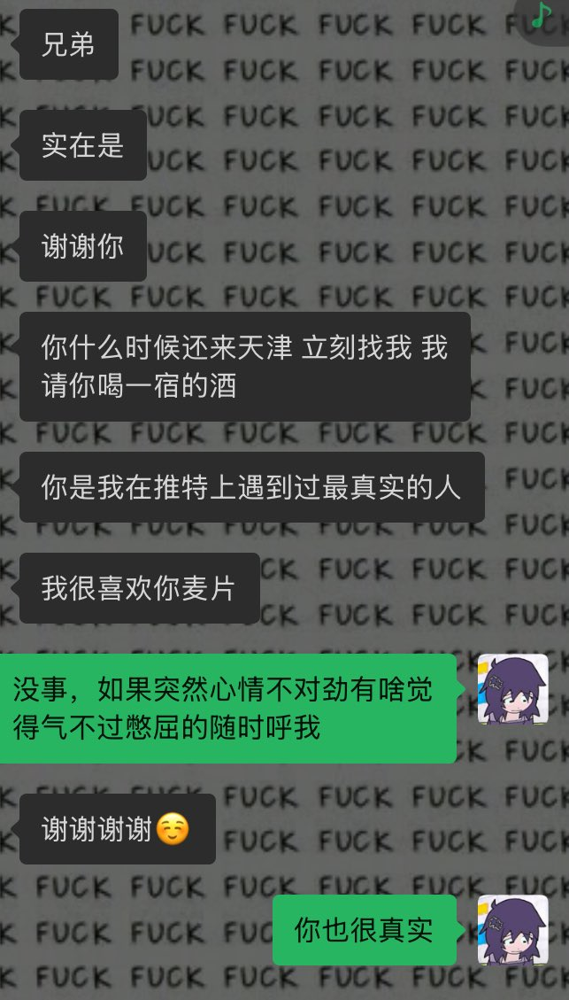

麦片
@maipianaini0930
@DKR_World 噢那你可错了尚先生，是有很多人骂我假朋克，另一面欣赏我的人也很多。就像你八面玲珑圆滑处事，我们本质是一样的。oder用药物麻痹自己我则用酒精。对于键盘政治这种东西呢我懒得讨论，如果你那些“预言”成真我还得夸你一句大预言家呢

◎東アジア躁鬱革委會
@DKR_World
@maipianaini0930 既然你沒事找事了，我順便建議你深刻研讀一下這篇文章，不要只把朋克當標籤掛身上，你對Oder在遭遇同樣境遇的問題上發言非常之小資，難怪和你玩過的人都說你假朋克，早點摘摘自己的帽子重新從《單向度的人》看起吧，你這種人生在巴勒斯坦也不會支持巴勒斯坦人，法塔赫思維鬧麻了